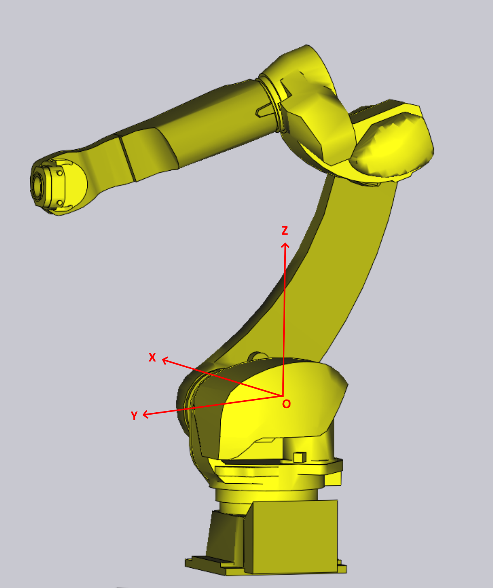
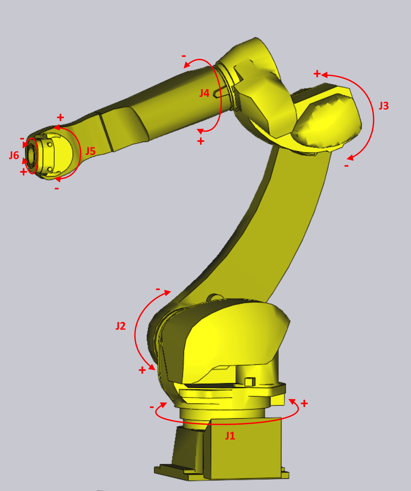
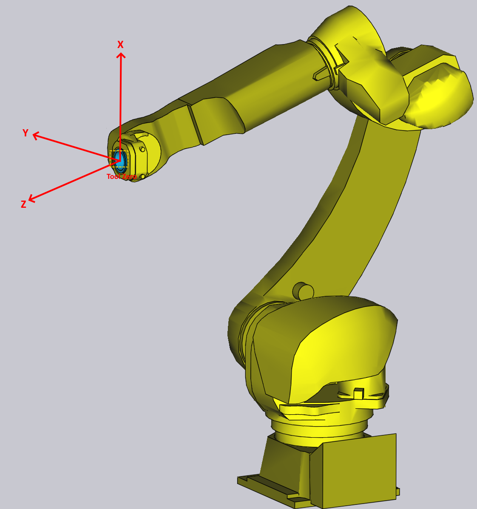
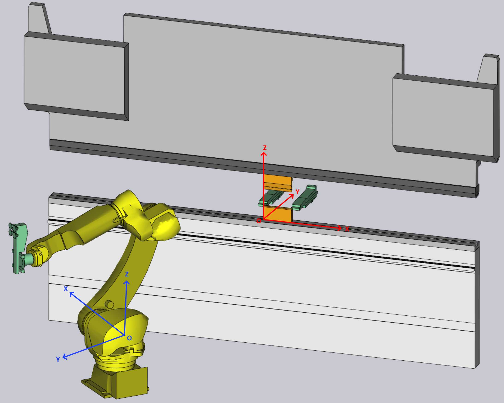
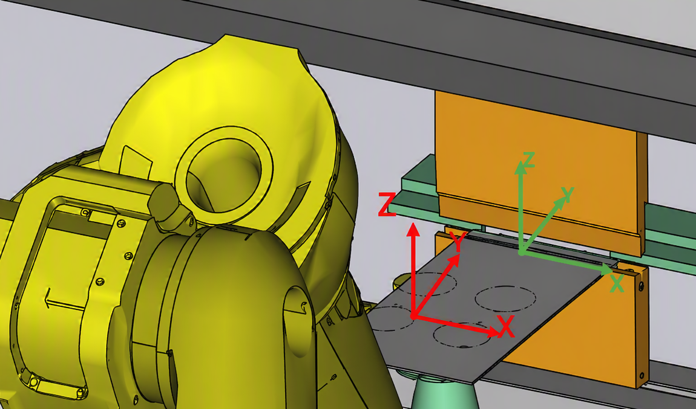

Coordinate Systems
A coordinate system provides a structured way to describe the position of objects in space. It starts from a fixed reference point called the origin and uses lines called axes to show direction. Coordinate systems are essential in robotics for defining movements, orientations, and interactions between components.
Each component in the operating space typically has its own coordinate system. To make sure everything lines up and moves correctly, we use frames to connect these systems. This helps all parts work together smoothly.
Given below are the coordinate systems for the components in our operating space:
 → World Coordinate System
→ World Coordinate System
→ Tool Coordinate System
 → Coordinate System of UserFrame1 (Bending Machine)
→ Coordinate System of UserFrame1 (Bending Machine)
→ Coordinate System of UserFrame2 (Pickup Pallet)
→ Coordinate System of UserFrame3 (Centering Table)
→ Coordinate System of UserFrame4 (Deposit)
Robot Coordinates
Robot World Coordinate System
It is the global coordinate system of the robot. The origin point (0,0,0) of the robot is defined at the intersection of joints J1 and J2.
| Use Fleming’s Right-Hand Rule from the connector point of the robot to determine the orientation of the coordinate axes. |

Joint Coordinate System
In the joint coordinate system, a robot operates by controlling each joint individually based on its own axis of rotation or translation. This method is especially useful for tasks like teaching or programming the robot manually.

Tool Coordinate System
The Tool Coordinate System’s origin is located at the centre of the robot end flange. The tool coordinate system allows the user to jog the robot in the direction of the tool attached with the end flange. The robot will move in the selected tool frame’s coordinate system when it is in Tool Coordinate System.

User Coordinate System
It is a customizable coordinate system defined by the user. The robot will move in the selected user frame’s coordinate system when it is in User Coordinate System.
Every UserFrame component like Bending Machine, Pick-up Pallet, Centering Table etc., has their own coordinate system. Represented below are the coordinates of our UserFrame components:

-
Origin point is located at the center of the bending machine.
-
X-axis: left and right direction from the origin point.
-
Y-axis: front and back direction from the origin point.
-
Z-axis: up and down direction from the origin point.
| UserFrame 1’s origin point is used as the reference point for positioning all other UserFrames. |
Jog Coordinate system (JGFRM)
Jog frames help to move the Robot aligned with components. The robot will move in the selected jog frame’s coordinate system when it is in Jog Coordinate System. If it is in this mode, the robot will move in the selected jog frame’s coordinate system.

→ Tool Frame
 → Jog Frame
→ Jog Frame